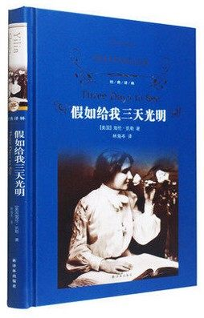
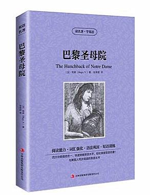
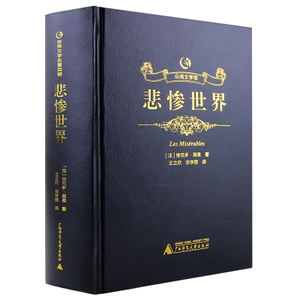

《假如给我三天光明》主要写了海伦变成盲聋哑人后的生活。刚开始的海伦对于生活是失望的，用消极的思想去面对生活，情绪非常的暴躁，感觉现实生活中没有了希望。但在遇到她的老师安妮·莎莉文之后，使海伦对生活重新有了希望。海伦逐渐学会了阅读、学习和身边无处不在的爱。终于，她的努力得到了回报，用自己的汗水实现了大学梦想。 |
 |
|  | 《巴黎圣母院》是法国文学家维克多·雨果创作的长篇小说，《巴黎圣母院》以离奇和对比手法写了一个发生在15世纪法国的故事：巴黎圣母院副主教克罗德道貌岸然、蛇蝎心肠，先爱后恨，迫害吉ト赛女郎埃斯梅拉达。面目丑陋、心地善良的敲钟人卡西莫多为救女郎舍身。小说揭露了宗教的虚伪，宣告禁欲主义的破产，歌颂了下层劳动人民的善良、友爱、舍己为人，反映了雨果的人道主义思想。 |
《悲惨世界》是由法国作家维克多·雨果在1862年发表的一部长篇小说，其内容涵盖了拿破仑战争和之后的十几年的时间。故事的主线围绕主人公土伦苦刑犯冉·阿让（Jean Valjean）的个人经历，融进了法国的历史、革命、战争、道德哲学、法律、正义、宗教信仰。 |
 |